Structure Discovery
Factor Analysis
Factor Analysis
You have a whole lot of variables
Can you group them into “factors”?
Factor Analysis and Clustering
Not the same
Clustering finds how data points group together
Factor analysis finds how data features/variables/items group together
In many cases, one problem can be transformed into the other
But conceptually still not the same thing
Goal 1 of Factor Analysis
You have a lot of quantitative* variables
And since you have a lot of variables you have high dimensionality
You want to reduce the dimensionality into a smaller number of factors
Goal 1 of Factor Analysis
- There is also a variant for categorical and binary data, Latent Class Factor Analysis (LCFA; Magidson and Vermunt (2001); Magidson and Vermunt (2004))
- As well as a variant for mixed data types, Exponential Family Principal Component Analysis (EPCA – Collins, Dasgupta, and Schapire (2001))
Goal 2 of Factor Analysis
You have a lot of quantitative* variables
- And since you have a lot of variables you have high dimensionality
- You want to understand the structure that unifies these variables
Classic Example
- You have a questionnaire with 100 items
Do the 100 items group into a smaller number of factors?
E.g. Do the 100 items actually tap only 6 deeper constructs?
Can the 100 items be divided into 6 scales?
Which items fit poorly in their scales?
- Common in attempting to design questionnaire with scales and sub-scales
Another Example
- You have a set of 600 features of student behavior
- You want to reduce the data space before running a classification algorithm
Do the 600 features group into a smaller number of factors?
- E.g. Do the 600 features actually tap only 15 deeper constructs?
Another Example
- You have a taxonomy of 120 design features that an e-learning lesson could possess
- You want to reduce the data space before studying the relationship between these features and student learning
Do the 120 design features group into 8 factors?
- E.g. Do the 120 features actually group into a set of 8 dimensions of tutor design?
Two types of Factor Analysis
Experimental
Determine variable groupings in bottom-up fashion
More common in EDM
Confirmatory
Take existing structure, verify its goodness
More common in Psychometrics
Mathematical Assumption in most Factor Analysis
Each variable loads onto every factor, but with different strengths
- Some strengths are infinitesimally small
- Some strengths are infinitesimally small
Example
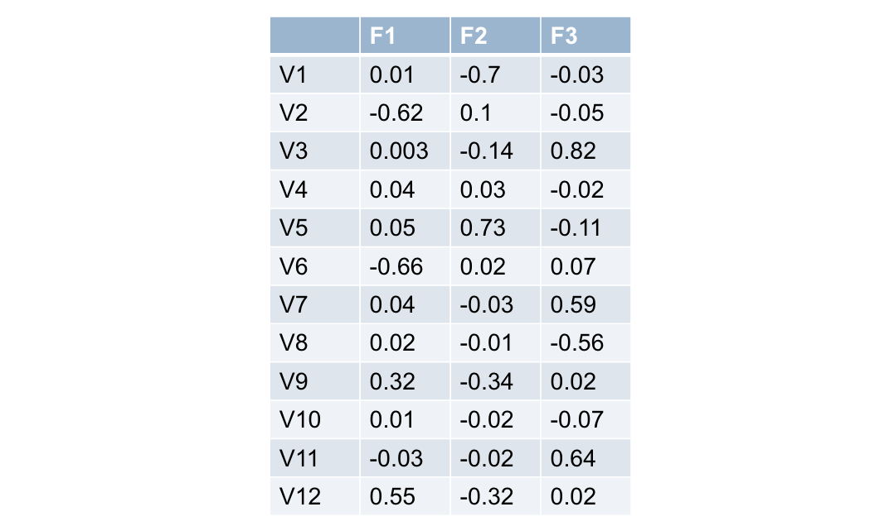Computing a Factor Score
Can you write an equation for F1?
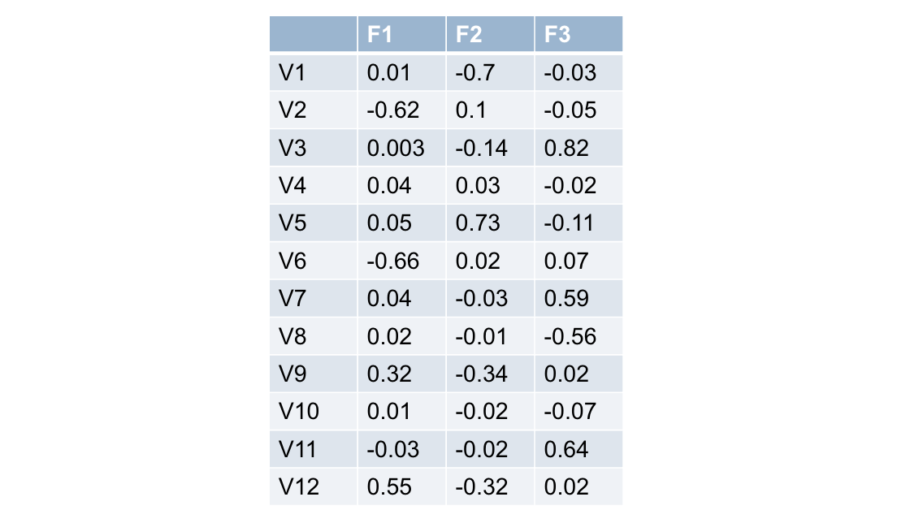Can you write an equation for F1?
(It’s just a straight-up linear equation, like in linear regression!)
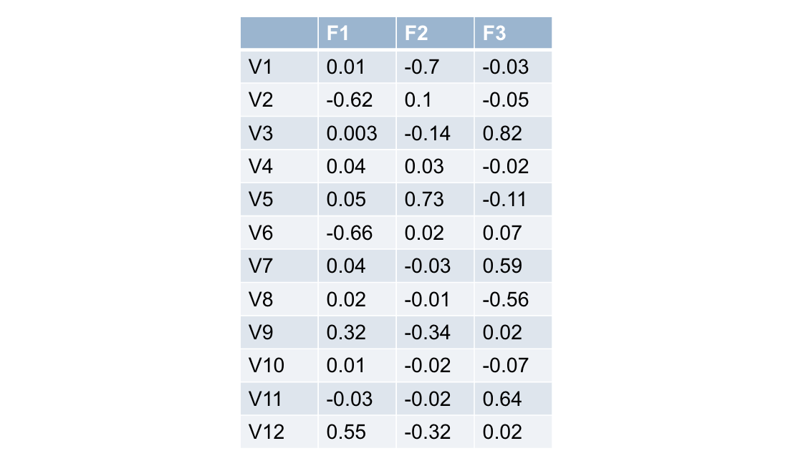Example
0.01V1-0.62V2+0.003V3+0.04V4+0.05V5-0.66V6
+0.04V7+0.02V8+0.32V9+0.01V10-0.03V11+0.55V12
Popup quiz
Can you write an equation for F2?
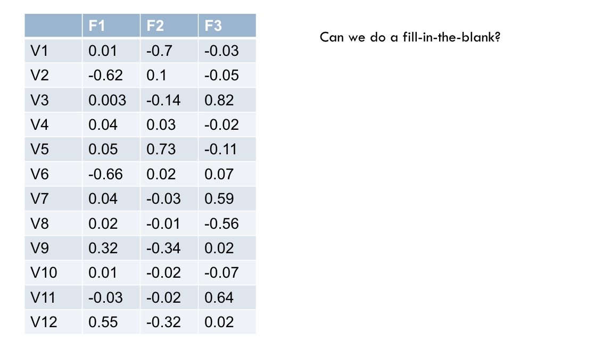Which variables load strongly on F1?
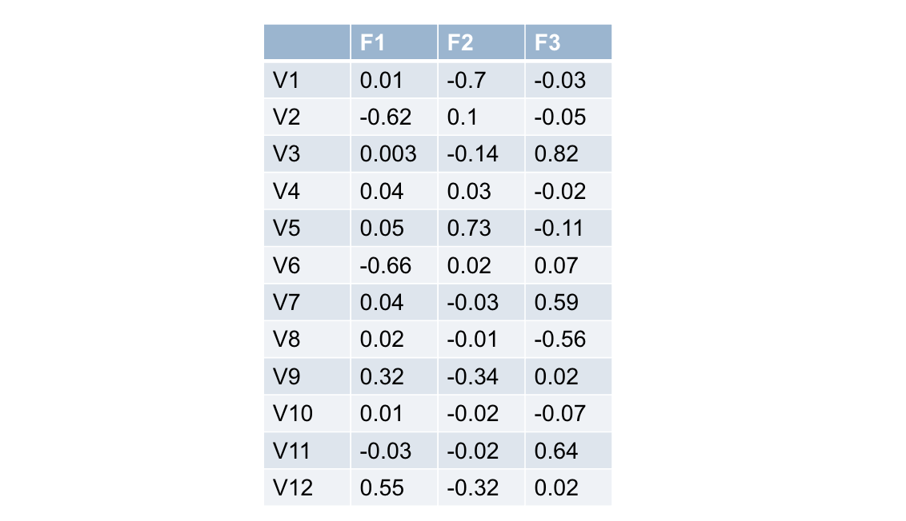Wait… what’s a “strong” loading?
- One common guideline: > 0.4 or < -0.4
Comrey & Lee (1992)
0.70 excellent (or -0.70)
0.63 very good
0.55 good
0.45 fair
0.32 poor
One of those arbitrary things that people seem to take exceedingly seriously
- Another approach is to look for a gap in the loadings in your actual data
Which variables load strongly on F1?
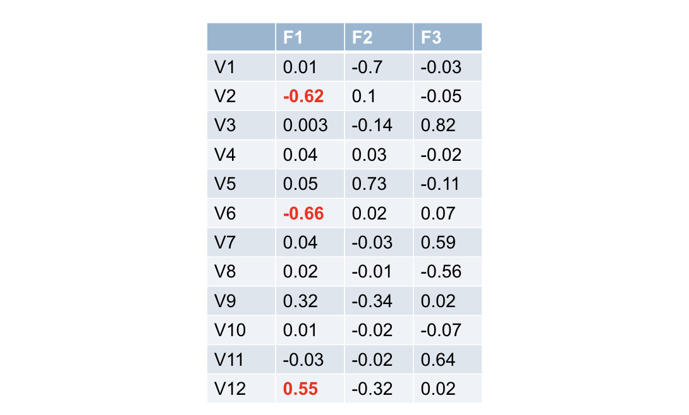Which variables load strongly on F2?
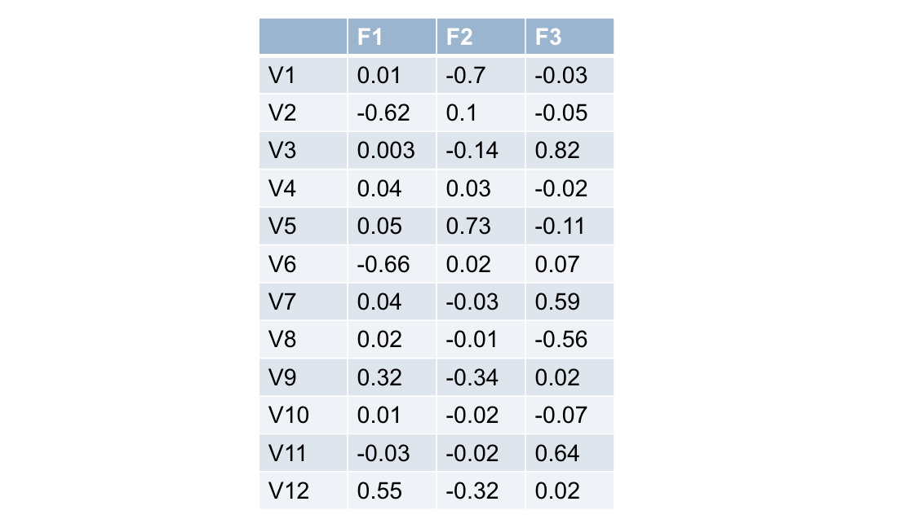Which variables load strongly on F2?
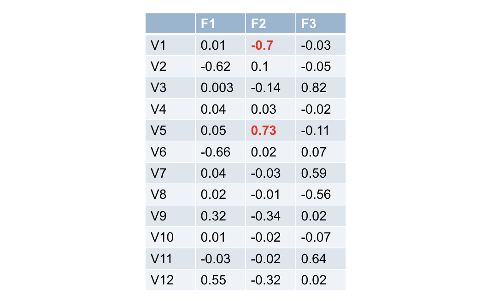Quiz: Which variables load strongly on F3?
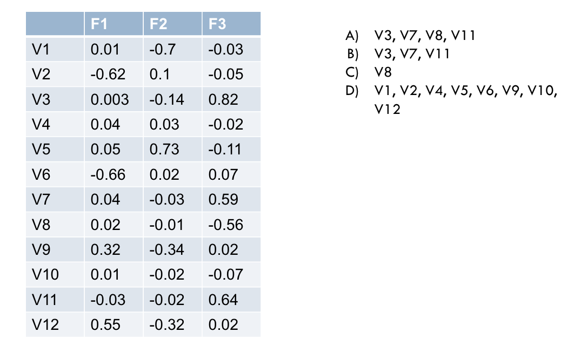Which variables don’t fit this scheme?
e.g. don’t load strongly on any factor
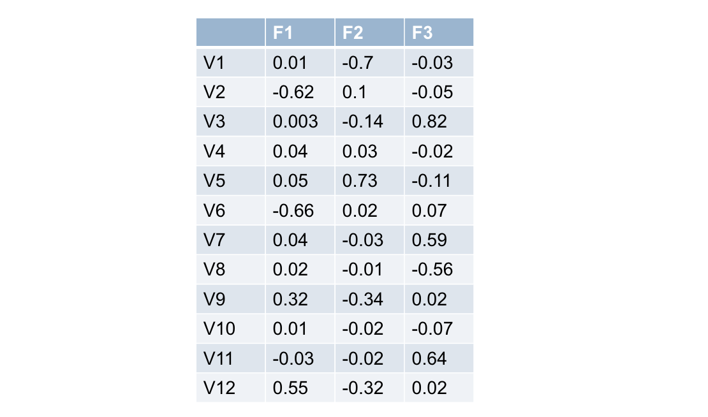Which variables don’t fit this scheme?
e.g. don’t load strongly on any factor
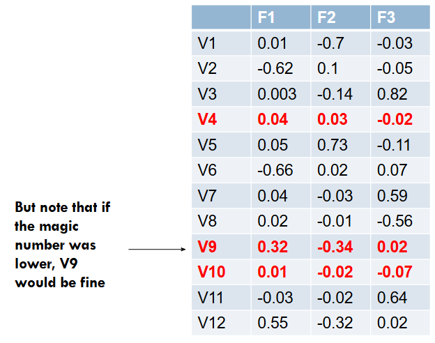Assigning items to factors to create scales
After loading is created, you can create one-factor-per-variable models (“scales”) iteratively
assigning each item to one factor
dropping the one item that loads most poorly in its factor, if it has no strong loading
re-fitting factors
Item Selection
Some researchers recommend conducting item selection based on face validity – e.g. if it doesn’t look like it should fit, don’t include it
Depends on how theory-driven you want to be
- And how much of a theory you actually have!
How does it work mathematically?
Two algorithms (Ferguson, 1971)
Principal axis factoring (PAF)
- Fits to shared variance between variables
Principal components analysis (PCA)
- Fits to all variance between variables, including variance unique to specific variables
- PCA is more common these days
- Similar, especially as number of variables increases
How does it work mathematically?
First factor tries to find a combination of variable-weightings that gets the best fit to the data
Second factor tries to find a combination of variable-weightings that best fits the remaining unexplained variance
Third factor tries to find a combination of variable-weightings that best fits the remaining unexplained variance…
How does it work mathematically?
Factors are then made orthogonal (e.g. uncorrelated to each other)
Uses statistical process called factor rotation, which takes a set of factors and re-fits to maintain equal fit while minimizing factor correlation
Essentially, there is a large equivalence class of possible solutions; factor rotation tries to find the solution that minimizes between-factor correlation
Looking at this another way…
- This approach tries to find lines, planes, and hyperplanes in the K-dimensional space (K variables)
- Which best fit the data
- This may remind you of spectral clustering…
Goodness
- What proportion of the variance in the original variables is explained by the factoring?
(e.g. r2 – called in Factor Analysis land the estimate of the communality)
Better to use cross-validated r2
- Still not standard
How many factors?
- Best approach: decide using cross-validated r2
- Alternate approach: drop any factor with fewer than 3 strong loadings
Alternate approach: add factors until you get an incomprehensible factor
- But one person’s incomprehensible factor is another person’s research finding!
Desired Amount of Data
At least 5 data points per variable Gorsuch (1983)
At least 3-6 data points per variable Cattell (1978)
At least 100 total data points Gorsuch (1983)=
Comrey and Lee (1992) guidelines for total sample size
100= poor
200 = fair
300 = good
500 = very good
1,000 or more = excellent
- My opinion: use cross-validation and see empirically
OK you’ve done a factor analysis, and you’ve got scales
- One more thing to do before you publish
- Check internal reliability of scales
- Cronbach’s α
Cronbach’s α
\(\alpha = \frac{N·\overline{c}}{\overline{v}+(N-1)·\overline{c}}\)
N = number of items
C = average inter-item covariance (averaged at subject level)
V = average variance (averaged at subject level)
Cronbach’s α: magic numbers Mallery and George (2003)
> 0.9 Excellent
0.8-0.9 Good
0.7-0.8 Acceptable
0.6-0.7 Questionable
0.5-0.6 Poor
< 0.5 Unacceptable
Factor Analysis
- A powerful tool for discovering unknown structure in data
- Conceptually similar to clustering
- Finds an orthogonal type of structure
Next module
Q-Matrix